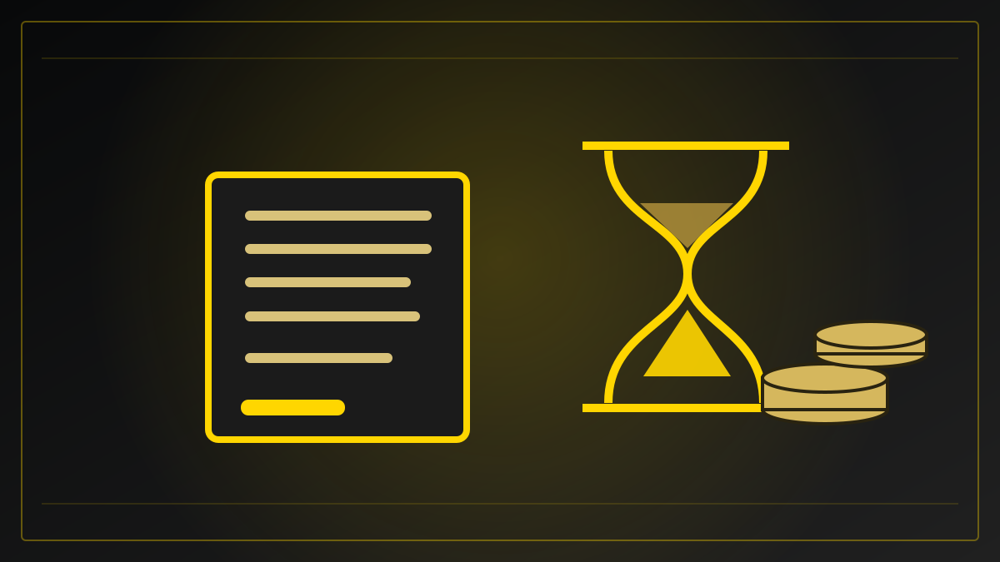

REDAKSJONELT UTKAST – IKKE PUBLISERT
Økonomi og velferd · Utkast opprettet 30. oktober 2026
Regjeringen vil gjøre pensjon enklere å forstå
Mange ønsker å forstå sin egen pensjon, men færre har undersøkt hva de kan få. Et nytt strategiforslag er sendt på høring – med mål om tydeligere informasjon om valgene som former pensjonsøkonomien.

Et system mange møter sent
Pensjonen formes gjennom mange år, men for mange blir temaet først konkret når pensjonsalderen nærmer seg. Det kan gjøre valgene vanskelige: Hva betyr deltid, jobbskifte og noen ekstra år i arbeid? Og hvordan virker offentlig pensjon sammen med ordninger fra arbeidsgiver?
Onsdag 28. oktober sendte Arbeids- og inkluderingsdepartementet et forslag til en helhetlig strategi for pensjonsinformasjon på høring. Målet er at flere skal forstå både rettighetene sine og de økonomiske konsekvensene av egne valg.
Interesse er ikke det samme som oversikt
Departementet viser til en kunnskapsoppsummering fra Oslo Economics, utarbeidet på oppdrag fra Nav. Tallene departementet trekker fram, er også dokumentert i en Nav-analyse publisert i mars 2024. Analysen bygger på en undersøkelse sommeren 2023 blant personer mellom 30 og 60 år: Over åtte av ti oppga at de var interesserte i egen framtidig pensjon, men bare omtrent halvparten hadde brukt pensjonskalkulator eller regnet på beløpet. Av dem som hadde gjort en beregning, svarte over halvparten at resultatet var lavere enn de hadde forventet.
Dette er svar om forventninger og egne beregninger, ikke en måling av framtidige utbetalinger. Tall fra en undersøkelse i 2023 kan heller ikke alene si hvordan dagens befolkning vil forstå eventuelle nye informasjonstiltak. De illustrerer likevel et problem: Mange vet at pensjon er viktig, men mangler et samlet bilde av hva den kan bety for dem.
Forskjellige spørsmål gjennom livet
Strategiutkastet beskriver ulike behov i ulike livsfaser. For unge arbeidstakere handler det om opptjening og tjenestepensjon. For dem som har arbeidet en stund, kan jobbskifte, deltidsarbeid, sykdom eller opphold i utlandet påvirke bildet. Nær pensjonsalderen blir spørsmål om uttakstidspunkt, AFP, skatt og kombinasjon av jobb og pensjon viktigere.
Regjeringen peker også på grupper som kan ha større vansker med å bruke digitale verktøy, eller som har begrensede norskkunnskaper eller en svakere tilknytning til arbeidslivet. Et system kan være korrekt beskrevet på nettsider og likevel være vanskelig å forstå i praksis.
Forslag – ikke nye regler
Det som er sendt på høring, er et forslag om informasjon og veiledning. Det innebærer ikke at nye pensjonssatser eller uttaksregler allerede er vedtatt. Utkastet er utarbeidet av Arbeids- og velferdsdirektoratet i samarbeid med pensjonsleverandører og andre informasjonsaktører. Departementet vil bygge videre på pensjonsleverandørenes ansvar for egne ordninger, men foreslår tettere samarbeid og en tydeligere rolle for Nav. Regjeringen beskriver også egne prosesser for å følge opp andre deler av pensjonsforliket fra 2024.
Det arbeides parallelt med andre tiltak knyttet til pensjonsforliket, blant annet spørsmål om gradvis høyere pensjonsalder og minsteytelser. Disse prosessene må ikke blandes sammen med denne høringen.
Frist i januar
Høringen ble åpnet 28. oktober 2026, og på regjeringens høringsside står fristen som 27. januar 2027. Høringssvar er offentlige og publiseres sammen med andre uttalelser. Det videre spørsmålet er hvordan informasjon og veiledning eventuelt endres etter høringen, og om tiltakene bidrar til bedre forståelse.
For den enkelte er den mest nyttige oppfølgingen å undersøke sine egne opplysninger hos Nav og pensjonsleverandørene, og å få hjelp ved behov. Et generelt nyhetsoppslag kan forklare prosessen, men kan ikke beregne hva en bestemt person kommer til å få utbetalt.